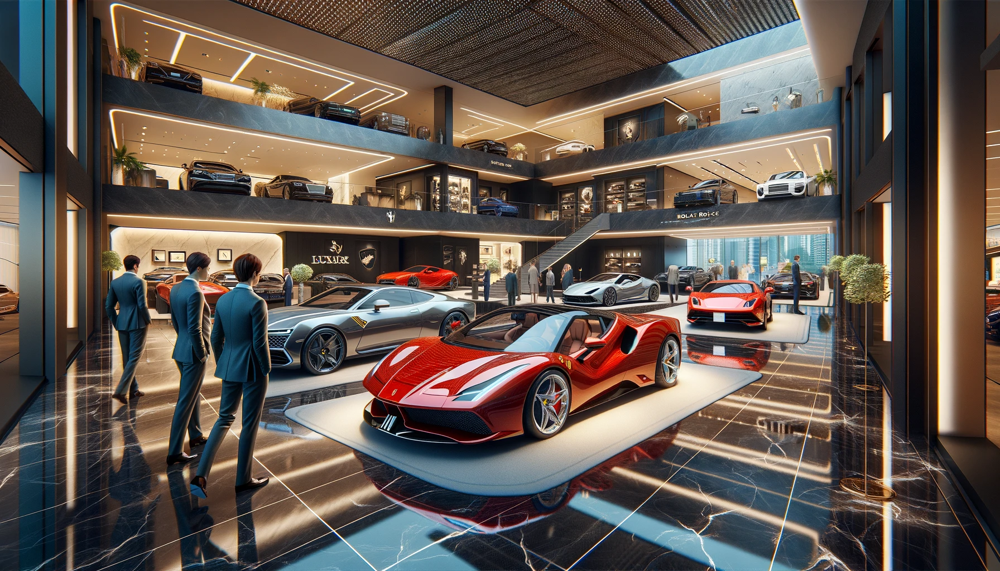

En Luxury Drive, nos dedicamos a ofrecer una experiencia exclusiva para los amantes de los automóviles de lujo. Fundado por Javier Romero, un estudiante apasionado de desarrollo de aplicaciones web, nuestro concesionario combina la elegancia de los autos de alta gama con la innovación tecnológica. En Luxury Drive, encontrarás una cuidada selección de vehículos de las marcas más prestigiosas, cada uno elegido por su calidad, rendimiento y diseño. Ya sea que busques el auto de tus sueños o una inversión en sofisticación, nuestro equipo está comprometido en ofrecerte un servicio excepcional y una experiencia de compra sin igual.

Con un enfoque en la excelencia, Luxury Drive no solo se destaca por la calidad de sus vehículos, sino también por su compromiso con el cliente. Sabemos que la compra de un automóvil de lujo es una decisión importante, y es por eso que nuestro equipo de expertos está aquí para asesorarte en cada paso del proceso. Ya sea que busques un coche deportivo de alto rendimiento, un SUV elegante o una berlina de lujo, te ayudaremos a encontrar el vehículo que mejor se adapte a tu estilo y necesidades. Además de nuestra oferta exclusiva de vehículos, Luxury Drive también se enorgullece de contar con un servicio postventa de primer nivel. Desde mantenimiento especializado hasta opciones de personalización, nos aseguramos de que tu experiencia con nosotros no termine al momento de la compra, sino que se convierta en una relación de largo plazo.